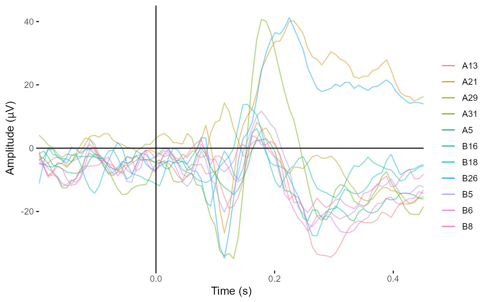

Convert an eeg_data or eeg_epochs object to using Current
Source Densities. This command uses a spherical spline algorithm (Perrin et
al., 1989) to compute scalp surface Laplacian/current source density
estimates of scalp potentials, a reference-free measure of electrical
activity that emphasises more local spatial features
compute_csd(data, ...)
# Default S3 method
compute_csd(data, ...)
# S3 method for class 'eeg_data'
compute_csd(data, m = 4, smoothing = 1e-05, scaling = 1, ...)
# S3 method for class 'eeg_epochs'
compute_csd(data, m = 4, smoothing = 1e-05, scaling = 1, ...)Arguments
Methods (by class)
compute_csd(default): Default method to detect unknown classes.compute_csd(eeg_data): Transformeeg_datato CSDcompute_csd(eeg_epochs): Transformeeg_datato CSD
References
Perrin, F., Pernier, J., Bertrand, O., Echallier, J.F. (1989). Spherical splines for scalp potential and current density mapping. Electroencephalography and Clinical Neurophysiology, 72(2), 184-187. PMID: 2464490
Kayser, J., Tenke, C.E. (2006). Principal components analysis of Laplacian waveforms as a generic method for identifying ERP generator patterns: I. Evaluation with auditory oddball tasks. Clinical Neurophysiology, 117(2), 348-368.
Kayser, J., Tenke, C.E. (2015). Issues and considerations for using the scalp surface Laplacian in EEG/ERP research: A tutorial review. International Journal of Psycholphysiology, 97(3), 189-209
Examples
csd_epochs <- compute_csd(demo_epochs)
plot_butterfly(csd_epochs)
#> Creating epochs based on combinations of variables: epoch_label participant_id

# Compare the topographies of the CSD vs average referenced data
topoplot(demo_epochs, c(.2, .21))
#> Creating epochs based on combinations of variables: epoch_label participant_id
#> Using electrode locations from data.
#> Plotting head r 95 mm
 topoplot(csd_epochs, c(.2, .21))
#> Creating epochs based on combinations of variables: epoch_label participant_id
#> Using electrode locations from data.
#> Plotting head r 95 mm
topoplot(csd_epochs, c(.2, .21))
#> Creating epochs based on combinations of variables: epoch_label participant_id
#> Using electrode locations from data.
#> Plotting head r 95 mm